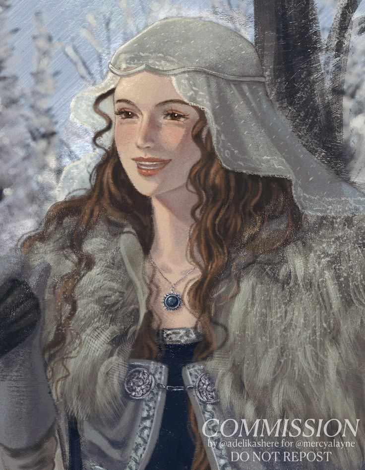

Ylva Stark
| Ylva Stark | Lorn Stark’s daughter, riding south with the Crown Prince’s party · Human, Kharven northern stock, House Stark of Hollenmark, and Hallenfeld by her mother · as of the road south from Kharven-Seat, about 732 IC |
| Epithet | the White Road the Hallenfeld couriers gave it to her the winter she brought a string of eleven post-horses home through a blizzard on a road that froze hard in front of her and shut behind; in the Guard yard at the Seat she is still Lorn’s girl, and the riders who have seen her laugh call her the Thaw, which she pretends not to like |
| Concept | She opens a road in front of her and freezes it shut behind. |
| Stat line | Stage IV Flourishing · Adept (Clouded) Level 88 · Refined · unclassed Body IV Mastered, unread · Lenses: home |
| Combat grammar | Blade, mounted; a light curved riding sword from the saddle, and the road under her |
| Aura | color: the Stark cold, a warm gray with a white rime over it, gone thinner and brighter in her than in her father, like frost on a window with the sun behind it · texture: crisp, moving; it runs forward of her like breath on a cold morning · shape: a lane, always; it goes out ahead of her in a line the width of a horse and lies down on the ground · feel: the smell of snow and saddle-leather, the ground ringing hard under a hoof, and the sense that the road in front of you has just been swept |
| How she moves | she sits a horse as if she had been born on one, which she very nearly was; on foot she has the Stark walk only when she remembers it, and otherwise goes at a long quick stride with her head up, looking at the road ahead; she laughs with her whole face and stops laughing all at once when something on the road is wrong |
| Stack | sustainable 160, 130 and 150 in Celerity, Reflex and Tolerance, under 101 elsewhere · cap two steps on the hidden scale over the sustainable figure · layers: WHITE ROAD! when called |
| Bonded weapon | none yet |
| Kit | in the field, a cut-down breastplate over a red riding cloak, a black fur mantle and a tall cap of white fox with three white feathers in a gold clasp, her mother’s; at court and on the road, a white linen hood edged in scallops, a gray wolf-fur mantle and a dark blue gown trimmed in silver; and the piece people talk about first: the Hallenfeld courier captain’s rod across her breast, black wood and a gold boss at each end, which opens every post-house from the Seat to the border |
| Voice | ”Mother says the road’s bad past the fourth ford. Mother’s never once been wrong about a road. So we’re going round by the mill, Father, and you can sulk the whole way.” · speaker type: a Stark girl raised by a road woman, who asks the questions her father won’t and laughs at the answers |
| Next gate | Stage V, Splintering · Catalyst: surviving contact with something more than two full steps on the hidden scale over her ceiling · holds at Level 101; met before her Level reaches it, the Catalyst would leave her Overgrown until it does |
I. Identity
| Field | Value |
|---|---|
| Full Name | Ylva Stark |
| Pronunciation | YIL-vah STARK |
| Alias / Title | the White Road · Lorn’s girl · the Thaw |
Also Known As
| Name | Who says it |
|---|---|
| the White Road | the Hallenfeld couriers, and every post-house on the north road |
| Lorn’s girl | the Guard yard at Kharven-Seat |
| the Thaw | the Stark riders who have seen her laugh, behind her back |
| little wolf | her father, when nobody is listening; ylva is the old northern word for a she-wolf |
| Field | Value |
|---|---|
| Race / Lineage | Human, Kharven northern stock · House Stark of Hollenmark, carrying the Stark cold in the blood; House Hallenfeld of the river corridors through her mother, which gives no blood-gift and every road |
| Age | Nineteen |
| Family | father Lorn Stark, the Sword to the King, Captain of the Guard at Kharven-Seat; mother Tabitha Hallenfeld, the Road Woman; her grandfather Ulf Stark, executed beside Wystan Greymane, whom she does not remember |
| Raised | at Kharven-Seat, in the Hallenfeld house on the low street, and on the roads; her mother took her on courier strings from the year she could stay on a pony |
| Realm / Faction | Kharven; House Stark, sworn to the red chair · riding south with Naiser Yukari’s party, under her father’s keeping, because he wanted to show her the world |
| School and sect rank | the Guard yard at the Seat, the drill her father learned at Hollenmark; and her mother’s roads, the Hallenfeld shorthand, the marks a Hallenfeld hand sets against a route to say what state it is in · none |
Renown
| Among | What they say of her |
|---|---|
| the public | that the Sword’s daughter rides like a courier and talks like one |
| the Hallenfeld couriers | that she brought eleven post-horses home through the White Winter on a road that froze in front of her |
| the Guard | that she is the only person at the Seat who can make Lorn Stark laugh, and the only one who has tried |
| Field | Value |
|---|---|
| Catalyst Event | Woke at sixteen on the north road in a blizzard, leading a Hallenfeld courier string home when the lead horse went through the ice of the Kessen ford, and her father’s cold ran out ahead of her for the first time and showed her where the road would bear |
| Refusal | She will not leave anyone on the road behind her |
| Conviction | Every road goes somewhere, and somebody has to know which |
| Arc kind | Positive: the girl who knows every road learning that some of them only go one way |
II. Soul Architecture
| Field | Value |
|---|---|
| Level | 88; it holds Flourishing (30), and no Residual Strain builds in her short of 100 |
| Temperance Stage | IV, Flourishing · Adept |
| Path | Body IV Mastered · her father’s Path; the cold, the saddle and the sword-arm |
| Mastery | unread below Glory; her Traits work at their base |
| η | 0.45, the Stage’s own figure below Glory; more than half of what she spends still goes off as cold |
| Soul Crystal | Clouded |
| Crystal State | Refined, and cold to the touch of anyone who reads it, like her father’s |
| Class | Unclassed; the soul first offers one at Glory |
III. Wellspring Harmonizations
Field
The Stark cold
Value
not a Wellspring the house’s inheritance, older than the Starks’ own records; it draws heat out of everything near the bearer and drives it down into the ground. In her father it goes down through the heels and holds a line. In her it runs forward, along whatever road she is on, the way water runs downhill
IV. Primary Stats
| Primary | Total | Mean |
|---|---|---|
| Vitality | 430 | 53.75 |
| Ardency | 196 | 24.5 |
| Gnosis | 330 | 41.25 |
| Dexterity | 620 | 77.5 |
| Harmonics | 100 | 12.5 |
| Resilience | 230 | 28.75 |
| Tempering | 30 | 3.75 |
| Dominion (seven, Throne apart) | 120 | 17.14 |
| Throne | not opened | · |
| Field | Value |
|---|---|
| Pool | 2,056 |
| Spent | 2,056 |
| Unspent | 0 |
V. Sub-Stats
| Primary | ||||||||
|---|---|---|---|---|---|---|---|---|
| Vitality | Fortitude 70 | Absorption 30 | Constitution 120 | Hemostasis 10 | Regeneration 20 | Filtration 10 | Tolerance 150 | Threshold 20 |
| Ardency | Flux 40 | Alacrity 30 | Depth 20 | Penetration 66 | Compression 20 | Cascade 10 | Overchannel 0 | Density 10 |
| Gnosis | Perception 120 | Acuity 30 | Forecast 20 | Fluency 10 | Retention 40 | Analysis 10 | Cognition 10 | Vigilance 90 |
| Dexterity | Celerity 160 | Reflex 130 | Finesse 90 | Economy 100 | Evasion 70 | Grapple 20 | Feint 20 | Sequence 30 |
| Harmonics | Attunement 10 | Projection 0 | Breadth 0 | Stability 30 | Empathy 40 | Synergy 10 | Axis 10 | Suppression 0 |
| Resilience | Integrity 50 | Ward 0 | Persistence 40 | Anchoring 50 | Fortification 10 | Hardening 0 | Oath 80 | Continuity 0 |
| Tempering | Clarity 0 | Overflow 0 | Maturity 10 | Coherence 10 | Yield 10 | Ceiling 0 | Capacity 0 | Longevity 0 |
| Dominion | Radius 40 | Sovereignty 0 | Sense 20 | Gravity 10 | Pressure 30 | Command 20 | Fate 0 |
Field
Note
Value
A rider’s body and a road-reader’s eye. Celerity 160, Reflex 130 and Tolerance 150 carry her; Perception and Vigilance are the Hallenfeld half, a girl who has been watching roads since she was four. Everything that would let her stand and fight is low: Fortitude 70, Hardening and Ward empty, Tempering hardly begun. She is not built to hold a line like her father. She is built to be gone before anyone reaches it.
VI. Force of Hand
| Measure | Figure | Feats | Carried by | Note |
|---|---|---|---|---|
| Strike Force | Penetration 66 | from the saddle, at the gallop | Penetration 66 | the horse does most of it |
| Lifting | Constitution 120 | carried a courier with a broken leg across her saddle-bow for nine miles | Constitution 120 | |
| Travel speed | Celerity 160 | on her own feet; on a horse on the white road, the horse’s | Celerity 160 | |
| Reaction | Reflex 130 | · | Reflex 130 | |
| Durability | Fortitude 70 | · | Fortitude 70 | she does not intend to be there when it lands |
VII. Aether Flow
| Measure | Figure | Note |
|---|---|---|
| EU Reserve | 35,290 EU | by the law of reserves at Level 88 |
| Held as | Charge 100% | all of it in the Shell, like her father |
| Flux Density | 1,200 EU/g | |
| AU/s | 540 | Flux Density times a yield of 0.45 |
| From full | empties in about 1 minute 5 seconds at full output, Starvation at about 59 seconds | |
| Recovery | ten percent a minute at rest; faster in hard cold |
Spending tells
| Reserve left | What shows |
|---|---|
| half | her breath stops steaming, and frost comes up on the fur of her mantle |
| a quarter | her lips go blue and the rime on the road in front of her starts to break up |
| a tenth | she starts to shiver, which a Stark never does, and the road behind her thaws |
| past that | the cold comes home into her all at once, as it did to her father in the cedar wood |
VIII. Traits
Full accounts: Ylva Stark — Abilities
Below Glory her Mastery is unread, and every Trait works at its base.
| Trait | Kind | Source | Path and Form | Gates | What it does | Limit | Tell | Cost | Counter | Numbers |
|---|---|---|---|---|---|---|---|---|---|---|
| STARK RIME | Inherited | Inherited, House Stark | Body · the Stark cold, no Wellspring · Shape | none | The cold in the Stark blood. The warmth goes out of everything near her, and in her it runs forward along the ground rather than down. | it moves heat and cannot make it; against a great heat it is a bucket against a fire | her breath stops steaming | nothing she notices | heat; a hot room, a fire-worker | a few paces |
| WHERE IT BEARS | Primary | Lived | Body · the Stark cold · Read | none | Her rime runs ahead of her along any road she is on and settles differently on sound ground and rotten: hard and white where the road will bear, thin and gray where it won’t, and broken where something warm crossed it in the last hour. | it reads the ground and nothing on it; it needs cold enough to settle, and a warm wet road at midsummer tells her very little | a white line running out in front of her horse | almost nothing; a little reserve a mile | a hot day; a road nobody has ever traveled, which tells her nothing about who is waiting on it | to a quarter mile ahead |
IX. Skills and Abilities
Full accounts: Ylva Stark — Abilities
Skills
| Skill | Cues / mechanics | Learned where | Priced by (Sub-Stats) | Mark | Rank |
|---|---|---|---|---|---|
| Riding | courier riding: long distances, remounts, ice, the knee and not the rein | her mother’s courier strings | Celerity, Constitution | Mastered | Journeyman |
| The Hallenfeld shorthand | the marks a Hallenfeld hand sets against a route to say what state it is in; nobody outside the house can read them | her mother | Retention, Perception | Mastered | Journeyman |
| The riding sword | a light curved blade from the saddle; the cut at the gallop and the ride on through | the Guard yard | Finesse, Penetration | Drilled | Apprentice |
| Woodcraft and weather | which ice holds, which wind brings snow, where the deer go | her father, on the march | Perception, Vigilance | Mastered | Apprentice |
| The court bow | taught twice in the long gallery by the princess, because she did it wrong the first time | Mizuyi Moto | none | Held | · |
Techniques
| Technique | Kind | Mark | Source | Path and Form | Gates | What it does | Limit | Tell | Cost | Counter | Numbers |
|---|---|---|---|---|---|---|---|---|---|---|---|
| THE WHITE ROAD | Signature Art | Drilled | Lived | Body · the Stark cold · Shape and Claim | none | the power to open a way in front of her and freeze it shut behind | she has to keep moving; it is her father’s line turned to run, and if she stops, it stops | the white lane on the ground | from a little a mile to about a twelfth of her reserve for a road shut | heat; making her stop; a horse that will not run | see the moves below |
| SHUT THE ROAD! | Signature Technique | Drilled | Lived | Body · the Stark cold · Claim | none | At the gallop she drags the point of her sword along the ground behind her, and the road freezes shut in a line across it, a rime that takes the legs from under any horse that follows. | it holds only while she keeps riding away from it; if she turns back or stops, it thaws in a breath, because the claim is that this road is closed behind her and a girl who stops on it has unsaid that | the sword-point trailing a white plume | about 8% of her reserve, near 2,800 EU | outride her; or ride round, off the road | a road’s width, behind her |
| FROST-SHOD | Technique | Held | Lived | Body · the Stark cold · Shape | none | Her cold goes down the reins and into her horse’s hooves, and the horse grips ice like a cat on a wall. | one horse, her own, under her | rime on the fetlocks | a little reserve a minute | heat; a horse that is frightened of her | one horse |
Releases
| Release | Kind | Mark | Source | Path and Form | Gates | What it does | Limit | Tell | Cost | Counter | Numbers |
|---|---|---|---|---|---|---|---|---|---|---|---|
| WHITE ROAD! | First Release | Drilled | Lived | Body · the Stark cold · Shape | Stage IV | ”White road!” A lane of hard white rime runs out ahead of her for a quarter mile, flat and true as a swept floor over whatever the road was, and her horse runs on it without a slip. Her Celerity and Reflex read a step high, and nothing in her passes the roof of her Stage. | it goes where the road goes; she cannot lay it over open water or a drop | the white lane shooting out ahead | about 200 EU a second, near 3 minutes from a full reserve | heat; a road that ends | +1 step Celerity and Reflex |
Domain
| Field | Value |
|---|---|
| Note | None yet. |
X. Spirit Axes
| Person | Bond | Axis weight | What flows across it | Note |
|---|---|---|---|---|
| Lorn Stark | her father | heaviest | the cold, and the one person he laughs for | he put the fox cap over her eyes in the gate yard and went to see to the grays |
| Tabitha Hallenfeld | her mother | heavy | every road between the Seat and the border, and the rod | |
| Mizuyi Moto | the princess, taken | light | the court bow, taught twice | Ylva means to do it right when she comes home |
XI. Resistances
| Against | Resistance | Carried by |
|---|---|---|
| Cold | near-immune | Tolerance 150 and the blood |
| A bad road | very high | WHERE IT BEARS, and her mother |
| Heat | weak | · |
| Anything that catches her | poor | Fortitude 70, Ward 0 |
| Mind-work and soul-work | poor | Ward 0 |
XII. Physical Description
| Feature | Description |
|---|---|
| Build | tall for a woman and long in the leg, a rider’s build, lean through the waist and strong in the thigh and the hands |
| Hair | auburn, a deep red-brown, thick and wavy and worn long past the shoulders now, loose under the hood or crammed under the fox cap in the field, where it comes out in every direction |
| Face and eyes | an oval face, high-colored from the wind, with a straight nose, a wide mouth that laughs easily and all the way, and brown eyes, warm and very direct; she looks at you the way her mother looks at a road |
| The pendant | a dark blue stone in a silver star on a fine chain, which her father gave her the day she woke and did not say where he got |
| Court and road dress | a white linen hood edged in scallops; a heavy mantle of gray wolf fur; a gown of dark blue wool, the bodice trimmed in a band of silver embroidery and closed with two round silver brooches worked in knots and joined by a fine chain |
| Field harness | a breastplate cut down for her by a Seat armorer; a red riding cloak; a black fur mantle; a tall cap of white fox with three white feathers in a gold clasp, her mother’s; the courier rod across her breast |
XIII. Psychology
| Field | Value |
|---|---|
| Core Wound | the White Winter, when she brought eleven horses home and the courier on the twelfth went through the ice at the Kessen ford, and she heard him the whole time she was riding away |
| Flaw | She has to know where a road goes, and she will ride down one to find out when every sensible person has turned back |
| Desire | To see every road in the world; and that the princess comes home up the north road, so she can do the bow right |
| Strength | She has never once been lost |
| Loop | ask, ride, see for herself, come home and tell it |
| Foil | her father, who holds a line and never moves off it |
| Stress Default | quiet, watching the road, the laugh gone off her face all at once |
Voice block
| Field | Value |
|---|---|
| Speaker type | a Stark girl raised by a road woman, who asks the questions her father won’t and laughs at the answers |
| Lying tell | she can’t; she goes red to the hairline and changes the subject to the road |
| Notices first | the road, the weather, and how the horses are carrying |
| Speech length | quick, plain and frank; a question in every second line |
| Wit | warm and teasing, especially to her father, who is the only one she teases |
| Accent features | plain northern Common like her father, with her mother’s road-talk in it: distances in miles and fords, “past the fourth ford”, “round by the mill” |
| House words and sayings | ”By the sky that covers us,” from her father; “every road goes somewhere,” from her mother |
| Contractions | always |
| Pet phrase | ”Where does it go?” |
| Never says | ”I’m lost” |
| Stress shift | the questions stop |
| Grief shift | she saddles a horse and rides until she can’t |
| Sample line | ”Mother says the road’s bad past the fourth ford. Mother’s never once been wrong about a road. So we’re going round by the mill, Father, and you can sulk the whole way.” |
XIV. Equipment
| Item | What it is | Grade | Rarity | Rung | Bonded | Multipliers | Shell draw |
|---|---|---|---|---|---|---|---|
| The courier rod | a Hallenfeld courier captain’s rod, her mother’s | plain | Rare | · | no | none | none |
| The riding sword | a light curved blade, Hollenmark make | D | Uncommon | Linepiece | no | none | none |
| The breastplate | cut down at the Seat | D | Uncommon | Linepiece | no | Fortitude ×1.05 | none |
| The pendant | a dark blue stone in a silver star | plain | Rare | · | no | none | none |
| Item | Item Tier and stamp | Look | Maker’s mark | Wear and repairs | How it is shown off | What people say | Price |
|---|---|---|---|---|---|---|---|
| The courier rod | Plain | black wood, a gold boss at each end | the Hallenfeld factor’s | the gold worn smooth where a hundred post-house keepers have taken it in their hands | across her breast on a cord | that it opens every post-house between the Seat and the border, and that her mother gave it to her across a kitchen table without a word | not for sale; the Hallenfeld house would not let it be |
| The fox cap | Plain | white fox, three white feathers, a gold clasp | the clasp is her mother’s | she has been told twice not to lose it | in the field | that she looks like a hussar of the old marches in it, and she knows | not for sale |
| The pendant | Plain | a dark blue stone in a silver star on a fine chain | none she knows of | none | at her throat, always | that the Sword gave it to her and won’t say where he got it | not for sale |
XV. Temperance Record
Level log
| Levels | Where they were earned |
|---|---|
| 1 to 30 | the courier strings, the Guard yard, the north road, unwoken |
| 30 to 70 | woken at sixteen at the Kessen ford in the White Winter; the post roads after |
| 70 to 88 | the Seat road and the border; the night the princess was taken; the road south |
Stage ledger
| Stage | Name | Catalyst | Bought | The story in a line |
|---|---|---|---|---|
| I to II | Murmuring to Welling | crisis | no | woke at the Kessen ford with the cold running out ahead of her |
| III | Ascension | crisis | no | SHUT THE ROAD!, which nobody taught her, built the next spring from her father’s line turned to run |
| IV | Flourishing | crisis | no | the axis to her father set the night he went through the ice on the Seat road two winters ago and came home white with rime to the knees, and she sat with him until his hands were warm; WHITE ROAD! |
XVI. Fracture Log
| Event | Layer | Status | What it left |
|---|---|---|---|
| The twelfth horse | Core | open | she does not leave anyone on the road behind her |
Lore
Full account: Ylva Stark — Lore
Ties
| Person | Who they are to her |
|---|---|
| Lorn Stark | her father, the Sword to the King |
| Tabitha Hallenfeld | her mother, the Road Woman |
| Mizuyi Moto | the princess, who taught her the court bow twice |
| Yan Qianli | Lord Naiser’s wife, who is teaching her the plains words before the fords |
| Senna and Zira Yukari | the girls in the second carriage |
| Egil, Haldor, Ketil and old Orm | her father’s four chosen riders |